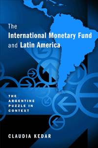

Chronicling the sometimes questionable relationship between the International Monetary Fund and Latin America from 1944 to the present
Chronicling the sometimes questionable relationship between the International Monetary Fund and Latin America from 1944 to the present


 Chronicling the sometimes questionable relationship between the International Monetary Fund and Latin America from 1944 to the present
Chronicling the sometimes questionable relationship between the International Monetary Fund and Latin America from 1944 to the present

|  |
The International Monetary Fund and Latin AmericaThe Argentine Puzzle in ContextClaudia Kedarcloth EAN: 978-1-43990-909-6 (ISBN: 1-4399-0909-1) |
Honorable Mention, Luciano Tomassini Latin American International Relations Book Award Committee of the Latin American Studies Association, 2014
"Kedar�s book is one of the most significant analyses yet written on the role of the International Monetary Fund (IMF) in Argentina. Although numerous commentators have dealt with aspects of this important subject, Kedar advances our understanding considerably through her insightful analysis of new sources and fresh conceptualization of IMF relations with sovereign states. Her choice of Argentina as a focus of this study is a wise one, for, as she notes, few other Latin American nations have experienced such a range of interactions with the IMF. The International Monetary Fund and Latin America represents a major contribution not only to the rich literature on political economy in Argentina, but also to the history of postwar Latin America and the rise of the current global financial and international systems more generally."
—Eduardo Elena, Associate Professor of History at the University of Miami, and author of Dignifying Argentina: Peronism, Citizenship, and Mass Consumption
The International Monetary Fund (IMF) has played a critical role in the global economy since the postwar era. But, claims Claudia Kedar, behind the strictly economic aspects of the IMF's intervention, there are influential interactions between IMF technocrats and local economists—even when countries are not borrowing money.
In The International Monetary Fund and Latin America, Kedar seeks to expose the motivations and constraints of the operations of both the IMF and borrowers. With access to never-before-seen archive materials, Kedar reveals both the routine and behind-the-scenes practices that have depicted International Monetary Fund-Latin American relations in general and the asymmetrical IMF-Argentina relations in particular.
Kedar also analyzes the "routine of dependency" that characterizes IMF-borrower relations with several Latin American countries such as Chile, Peru, and Brazil. The International Monetary Fund and Latin America shows how debtor countries have adopted the IMF's policies during past decades and why contemporary Latin American leaders largely refrain from knocking at the IMF's doors.
Excerpt available at www.temple.edu/tempress
"Kedar�s book derives from her success in clarifying the objectives of the IMF, while describing the conditions under which they were adopted or rejected.... It is well written, exhaustive, and contains many sound judgments. Kedar has interdisciplinary abilities as a historian and an economist."
—Journal of Interdisciplinary History
"Kedar's study of Argentine interactions with the IMF is a welcome and impressive addition.... With its clear and straightforward writing, the book is a challenging prompt for comparable studies on Brazil and Mexico, which are long overdue. Its academic significance is enhanced by the fact that it is in line with current debates about the beliefs, actual behavior, and influence of Washington politics on the procedures and policies of multilateral financial institutions, which important scholars...have pushed forward in the last decade."
—Hispanic American Historical Review
"Kedar makes meticulous use of IMF documents dating back to the 1940s, and triangulates with Argentine government documents and materials from the U.S. and British National Archives....[T]wo things about this book set it apart from the familiar chronicle. The first is its firm grounding in an impressive array of original historical documents.... Second, Kedar is part of a new movement of scholars seeking to update traditional theoretical understandings of what international financial institutions do and why they do it.... Kedar draws on newly-available information to present a different view of the IMF as a bureaucracy with its own bureaucratic interests, which do not always coincide with the interests of the U.S. government."
— Contemporary Sociology
"The International Monetary Fund and Latin America provides insights into local politics and the politics of international bodies, and the capacity of events to surprise even seasoned practitioners. There is accessible background on the politics and economies of Argentinian decline (and frustrated attempts to reverse decline).... Kedar also confirms the cynical assessment that, if you visit the doctor at the Fund, you know what the prescription will be."
—Economic History Review
"The International Monetary Fund and Latin America traces the long path of this multilateral agency�s relations with Argentina.... A welcome aspect of the book is its calling attention to the way the IMF�s dependency routine...is imposed and the fact that without relationships with the countries in which it acts it just would not happen.... [The book] enriche[s] the field of international relations [and] provide[s] us with valuable insights."
—Latin American Perspectives
"Kedar�s book on the role of the IMF in Argentina is a truly welcome addition. It provides perhaps one of the most comprehensive accounts of the fund�s historical interaction with the region since the establishment of the Bretton Woods institutions.... [T]he book is a well-written and thoroughly enjoyable piece of research. It adds an important revisionist perspective to IMF-Argentine relations and depicts a far more nuanced and mutually dependent relationship than is commonly portrayed, both in Latin America and elsewhere.... This is an excellent book, which anyone interested in IMF relations with Latin America, and even the fund more generally, should read."
—Latin American Politics and Society
Acknowledgments
Introduction
1. Multilateralism from the Margins: Latin America and the Founding of the IMF, 1942�1945
2. It Takes Three to Tango: Argentina, the Bretton Woods Institutions, and the United States, 1946�1956
3. Dependency in the Making: The First Loan Agreement and the Consolidation of the Formal Relationship with the IMF, 1957�1961
4. Fluctuations in the Routine of Dependency: Argentine�IMF Relations in a Decade of Political Instability, 1962�1972
5. All Regimes Are Legitimate: The IMF�s Relations with Democracies and Dictatorships, 1973�1982
6. Routine of Dependency or Routine of Detachment? Looking for a New Model of Relations with the IMF
Conclusions
Notes
References
Index
Claudia Kedar is a Lecturer in the Department of Romance and Latin American Studies and in the School of History at the Hebrew University of Jerusalem.
Latin American/Caribbean Studies
History
Political Science and Public Policy
© 2015 Temple University. All Rights Reserved. This page: http://www.temple.edu/tempress/titles/2222_reg.html.